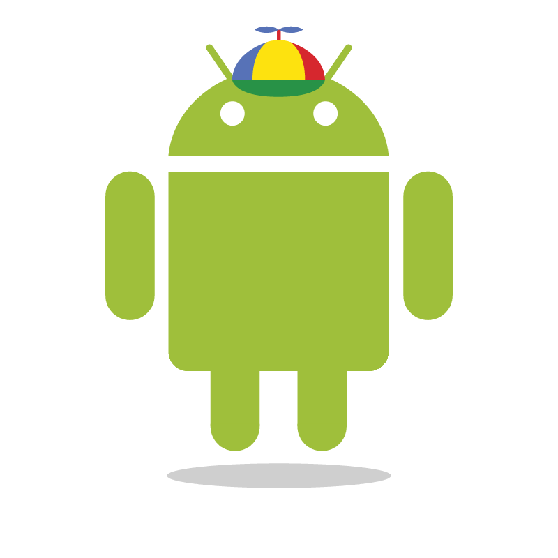

Sobre o evento
Preparamos um evento sensacional para você. No dia 7 de março vamos celebrar a importância e a diferença que as mulheres fazem na área de tecnologia. Teremos uma palestra sobre a importância da mulher na tecnologia, onde a professora Mirella Mouro irá falar sobre o que o gênero representa na área. Além da palestra, também teremos um painel super interessante com representantes da academia, empresa e comunidade, discutindo os motivos do incentivo às mulheres em computação. Afinal, porquê é importante? E pra não ficar só na teoria, à tarde teremos vários codelabs. Você poderá participar de dois (sujeito a ordem de inscrição e número de vagas).
Faça parte dessa festa!
Não deixe de entrar na comunidade Women Techmakers de Belo Horizonte!
Palestrantes
-
Palestra: Mulheres e Tecnologia
Mirella Mouro
Mirella M. Moro é professora adjunta do Departamento de Ciência da Computação (DCC) da Universidade Federal de Minas Gerais (UFMG) e trabalha na área de Bancos de Dados. Possui doutorado em Ciência da Computação pela University of California in Riverside (2007), e graduação e mestrado em Ciência da Computação pela Universidade Federal do Rio Grande do Sul (UFRGS). É Diretora de Educação da SBC (Sociedade Brasileira de Computação), editora-chefe da revista eletrônica SBC Horizontes e membro do Education Council da ACM.
-
Painel: porquê mulheres em computação?
Julia Crosman, Mirella Mouro, Carolina Bigonha e Isabella Oliveira
Julia Crosman é formada em Comunicação Social, Jornalismo pela PUC-Rio e com MBA em Recursos Humanos pela FIA-USP, entrou no Google em 2007 e, após passagens pelos escritórios de São Paulo e Buenos Aires, é atualmente Gerente de Recursos Humanos da Engenharia para América Latina e Chicago, em Belo Horizonte. Isabella Oliveira é product manager e apaixonada pelo desenvolvimento de software Web e Mobile. Especialista em Design de Interação e Diretora do Women Who Code - Belo Horizonte / Brasil. Carolina Bigonha é Co-founder & Product Manager da Zahpee.
-

Codelab: Android
Igor Ramos e Debora Silva
Igor Ramos é um nerd que se apaixonou à primeira vista por programação. Ao perceber que conciliar o mestrado na COPPE/UFRJ e o ensino de programação no IM/UFRJ deixava pouco tempo disponível para escrever código, decidiu se mudar para Belo Horizonte e trabalhar como Engenheiro de Software na Google.
-

Codelab: Go
Bruno Albuquerque e Daniel Fireman
Daniel Fireman is a Software Engineer at Google. Over the last 5.5 years he's worked on a variety of projects, including Google My Business and Orkut. He is currently focused on improving efficiency of Google Servers and when he isn't hacking, he spends time chilling with friends or dancing.
-

Codelab: App Engine
Bruno Buss e Juliano Ravasi
Juliano Ravasi has a Master's degree in Computer Science from the University of São Paulo, previously a researcher in Distributed Computer Systems and Operating Systems. He is a Software Engineer at Google Belo Horizonte and an enthusiast of open-source technologies.
Programação
| Horário | Atividade | Descrição |
|---|---|---|
| 9h30 | Credenciamento | - |
| 10h00 | Abertura | - |
| 10h10 | Palestra: Mulheres e Tecnologia Auditório principal | |
| 11h00 | Painel: porquê mulheres em computação? Auditório principal | Uma discussão com representantes da academia, empresa e comunidade sobre as razões da importância das mulheres na computação. |
| 12h00 | Almoço | - |
| 13h00 / 15h30 | Codelab: Android Sala à confirmar | Aprenda o básico do desenvolvimento de aplicativos Android. Pré-requisito: ambiente configurado. |
| 13h00 / 15h30 |
Codelab: Go
Sala à confirmar
|
Dê os primeiros passos no desenvolvimento com Go! Pré-requisitos: Saber programar (não necessariamente Go) e máquina com Go instalado |
| 13h00 / 15h30 |
Codelab: App Engine
Sala à confirmar
|
Introdução a utilização do Google App Engine como plataforma para aplicações em Python. Pré-requisitos: laptop com SDK do App Engine para Python instalado e conhecimentos básicos de Python. |
| 15h00 | Coffee-break | - |
| 17h30 | Encerramento | - |